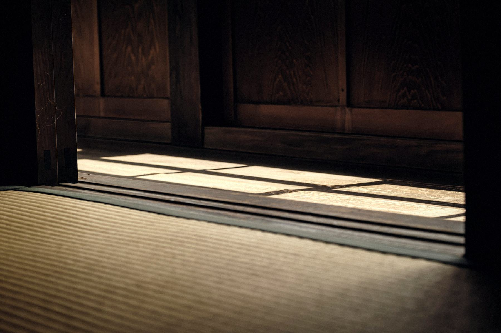
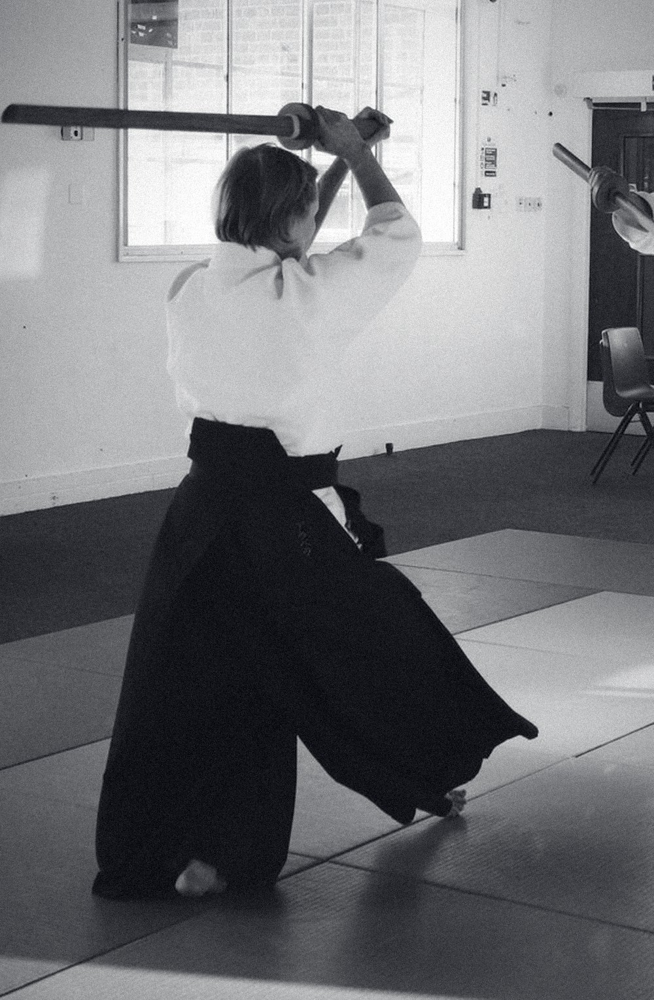

Bare feet on the mat, sandals at the edge of it. The first lesson is how to fall.
Light on tatami
初心shoshin. The beginner's mind, which the old teachers said was the one worth keeping.
Everything a first visit involves is on this page: what to wear, what happens, and the three ways people train here. A booked place is a confirmed place; a class is full at fifteen. If you read nothing else, come once on a Saturday and see for yourself.

Bare feet on the mat, sandals at the edge of it. The first lesson is how to fall.
Light on tatami
Before
Tracksuit bottoms and a long sleeved top. Bare feet on the mat, sandals to the edge of it. No uniform is needed until you decide to stay.
The first ten minutes
A bow at the door, a bow to the room, a warm up. Sensei shows you how to fall before she shows you anything else, because everything else depends on it.
The two hours
Paired practice, partners changing through the class. A senior grade is placed beside you on purpose, so that the first thing you feel is someone taking care.
What it is not
No punching bags, no sparring for beginners, no fitness test and no ego. An attack is received, joined and finished in one movement. You will be tired in a good way.
Afterwards
Up to three sessions before any registration is needed. If you continue, you join the British Aikido Federation, which includes your insurance.

A first class
£15
Two hours on the mat with everyone else. No obligation afterwards and no sales conversation; if you want to continue, you book again. The health questionnaire, the waiver and your consent for us to hold your health answers take a minute at booking.
The foundations course
£95
Falling, posture, the first techniques and the etiquette of the dojo, taught to three people at once so that nothing is missed. Four cohorts a year. Graduates are first in line for a member place, ahead of the waitlist. Write to us for the next date.
There is no buy button on this page, and that is deliberate.
Membership is a guaranteed place on a small mat, with a 5th Dan teaching for two hours, twice a week: Saturday morning and Tuesday evening. It is offered to six people at a time, and the route is the same for everyone: a first class, a conversation with sensei, then an invitation.
An invitation is earned by attitude, attendance and fit, not by how fast you are or how much you already know. When all six places are held, course graduates are first in line and everyone else joins a short waitlist; either way we tell you honestly where you stand and what the wait has been. If the fees are beyond you, say so: a small number of sponsored places exist each year for people who could not otherwise train, and nobody else is told.
The whole route from the door to a member place, so that nothing on this site has to be guessed at.
A first class
Any Saturday morning or Tuesday evening. Booked online, £15, your place confirmed at booking.
Up to three sessions
Drop in at £35 a class while you decide. No registration yet.
The federation
After your third session you join the British Aikido Federation, £35 a year, which includes your insurance.
The foundations course
Six weeks, three people, £95. The recommended way in. Four cohorts a year. This is usually when people buy a keikogi; we can supply one from Iwata Shokai in Tokyo, or you buy your own.
The conversation
Sensei talks to everyone who has trained a while. Graduates of the course are first in line.
The invitation
A member place, £95 a month, when one of the six is open. Until then, drop in or train on a ten class pack; the waitlist is short and we tell you where you stand.
No. Aikido uses timing and posture rather than strength, and the pace of the class is set so that a complete beginner and a senior grade can train together. You build fitness by training, not as a condition of it.
Classes are for adults aged eighteen and over. There is no juniors programme at present.
Usually, yes. Tell us at booking through the health questionnaire, and tell sensei on the day. Techniques can be adapted, and you are never asked to take a fall you are not ready for.
No. There is no sparring for beginners and no striking practice. Aikido has no first attack: you learn to receive and redirect, and your partners are there to help you learn.
Every fee is on the times and fees page: a drop-in class, a ten class pack, the foundations course, and federation membership. Membership of the dojo is by invitation and its fee is published there too.
You can keep training as a drop-in or on a pack, and we keep a short waitlist with your name and your place on it. The waitlist is also what persuades us to open a third weekly class.
Possibly, yes. A small number of sponsored places exist each year, funded by people and organisations who want the door kept open. Write to us in confidence and we will tell you honestly whether one is available. Nobody else is told.